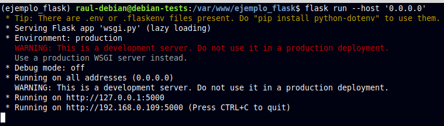
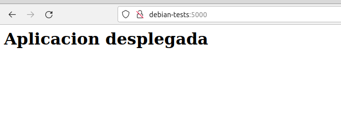
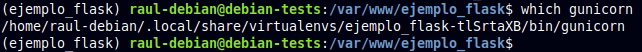
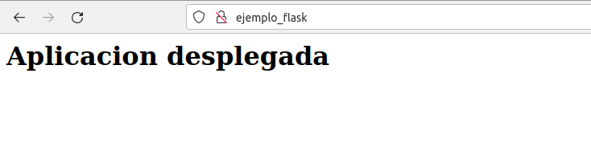

Práctica 8: Despliegue de una aplicación Flask (Python)
Introducción
¿Qué es un framework?
Actualmente en el desarrollo moderno de aplicaciones web se utilizan distintos Frameworks que son herramientas que nos dan un esquema de trabajo y una serie de utilidades y funciones que nos facilita y nos abstrae de la construcción de páginas web dinámicas.
En general los Frameworks están asociado a lenguajes de programación (Ruby on Rails (Ruby), Symphony (PHP)), en el mundo de Python el más conocido es Django pero Flask es una opción que quizás no tenga una curva de aprendizaje tan elevada pero nos posibilita la creación de aplicaciones web igual de complejas de las que se pueden crear en Django.
Flask
En la actualidad existen muchas opciones para crear páginas web y muchos lenguajes (PHP, JAVA), y en este caso Flask nos permite crear de una manera muy sencilla aplicaciones web con Python.
Flask es un “micro” Framework escrito en Python y concebido para facilitar el desarrollo de Aplicaciones Web bajo el patrón MVC.
La palabra “micro” no designa a que sea un proyecto pequeño o que nos permita hacer páginas web pequeñas sino que al instalar Flask tenemos las herramientas necesarias para crear una aplicación web funcional pero si se necesita en algún momento una nueva funcionalidad hay un conjunto muy grande extensiones (plugins) que se pueden instalar con Flask que le van dotando de funcionalidad.

De principio en la instalación no se tienen todas las funcionalidades que se pueden necesitar pero de una manera muy sencilla se pueden extender el proyecto con nuevas funcionalidades por medio de plugins.
El patrón MVC es una manera o una forma de trabajar que permite diferenciar y separar lo que es el modelo de datos (los datos que van a tener la App que normalmente están guardados en BD), la vista (página HTML) y el controlador (donde se gestiona las peticiones de la app web).
Gunicorn
Cuando se implementa una aplicación web basada en Python, normalmente se tienen estas tres piezas:
- Servidor web (Nginx, Apache)
- Servidor de aplicaciones WSGI (Gunicorn, uWSGI, mod_wsgi, Waitress)
- Aplicación web (Django, Flask, Pyramid, FastAPI)
Los servidores web procesan y distribuyen las solicitudes de los navegadores y otros clientes y envían respuestas a los mismos.
WSGI (Web Server Gateway Interface) proporciona un conjunto de reglas para estandarizar el comportamiento y la comunicación entre servidores web y aplicaciones web. Mediante el uso de servidores y aplicaciones web compatibles con WSGI, los desarrolladores pueden concentrar su tiempo y energía en el desarrollo de aplicaciones web en lugar de administrar la comunicación entre la aplicación y el servidor web.
Finalmente, Gunicorn, que es la abreviatura de Green Unicorn, es un servidor de aplicaciones WSGI que se encuentra entre el servidor web y su aplicación web, gestionando la comunicación entre los dos. Acepta solicitudes del servidor y las traduce (a través de WSGI) en algo que la aplicación web puede entender antes de pasarla a la aplicación web real. Envía respuestas desde la aplicación web al servidor. También se encarga de ejecutar varias instancias de la aplicación web, reiniciándolas según sea necesario y distribuyendo solicitudes a instancias saludables.
Gestor de paquetes pip
pip es el comando para instalar paquetes de Python integrados en las fuentes desde la versión 3.4.
Este comando automatiza la conexión al sitio https://pypi.org/, la descarga, la instalación e incluso la compilación del módulo solicitado.
Además, se ocupa de las dependencias de cada paquete.
Entornos virtuales en Python
Un entorno virtual es una forma de tener múltiples instancias paralelas del intérprete de Python, cada una con diferentes conjuntos de paquetes y diferentes configuraciones. Cada entorno virtual contiene una copia independiente del intérprete de Python, incluyendo copias de sus utilidades de soporte.
Los paquetes instalados en cada entorno virtual sólo se ven en ese entorno virtual y en ningún otro. Incluso los paquetes grandes y complejos con binarios dependientes de la plataforma pueden ser acorralados entre sí en entornos virtuales.
De esta forma, tendremos entornos independientes entre sí, parecido a como ocurría con los directorios de los proyectos de Node.js. De este modo, los entornos virtuales de Python nos permiten instalar un paquete de Python en una ubicación aislada en lugar de instalarlo de manera global.
Pipenv
Pipenv es una herramienta que apunta a traer todo lo mejor del mundo de empaquetado (bundler, composer, npm, cargo, yarn, etc.) al mundo de Python.

Automáticamente crea y maneja un entorno virtual para tus proyectos, también permite agregar/eliminar paquetes desde tu Pipfile así como como instalar/desinstalar paquetes. También genera lo más importante , el archivo Pipfile.lock, que es usado para producir determinado build.

Procedimiento completo para el despliegue
Vamos a empezar creando un EC2 Debian para esta práctica.
- Llámale P3.7Flask
- Ponle un procesador t2.medium, con 2 vCPU
- Crea un grupo de seguridad con acceso a puertos SSH, HTTP, HTTPS y TCP 5000. Llámale igual que al EC2.
- Conéctate al servidor
- Instala el servidor Web Nginx.
Vamos a ello.
-
Instalamos el gestor de paquetes de Python pip:
-
Instalamos el paquete
pipenvpara gestionar los entornos virtuales: -
Y comprobamos que está instalado correctamente mostrando su versión:
-
Creamos el directorio en el que almacenaremos nuestro proyecto. Al crearlo con
sudo, los permisos pertenecen a root y hemos de hacer que sea de nuestro usuario con chown. Y finalmente le damos los permisos adecuados como vimos en la práctica de Nginx.$ sudo mkdir /var/www/practica_flask $ sudo chown -R $USER:www-data /var/www/practica_flask $ chmod -R 775 /var/www/practica_flask/ $ ls -la /var/www/practica_flask/ drwxrwxr-x 2 admin www-data 4096 Sep 30 10:56 .Warning
Es indispensable asignar estos permisos, de otra forma obtendríamos un error al acceder a la aplicación cuando pongamos en marcha Nginx
-
Dentro del directorio de nuestra aplicación, creamos un archivo oculto
.envque contendrá las variables de entorno necesarias: -
Editamos el archivo y añadimos las variables, indicando cuál es el archivo
.pyde la aplicación y el entorno, que en nuestro caso será producción:Nota
En el mundo laboral real, se supone que la aplicación previamente ha pasado por los entornos de dev, test y preprod para el desarrollo y prueba de la misma, antes de pasarla a producción.
-
Iniciamos ahora nuestro entorno virtual.
Veremos que se nos inicia el entorno virtual, cosa que comprobamos porque aparece su nombre al inicio del prompt del shell:Pipenvcargará las variables de entorno desde el fichero.envde forma automática: -
Usamos
pipenvpara instalar las dependencias necesarias para nuestro proyecto: -
Vamos ahora a crear la aplicación Flask más simple posible, a modo de PoC (proof of concept o prueba de concepto). El archivo que contendrá la aplicación propiamente dicha será
Y tras crear los archivos, los editamos para dejarlos así:application.pyywsgi.pyse encargará únicamente de iniciarla y dejarla corriendo:application.py
wsgi.py -
Corramos ahora nuestra aplicación a modo de comprobación con el servidor web integrado de Flask. Si especificamos la dirección
0.0.0.0lo que le estamos diciendo al servidor es que escuche en todas sus interfaces, si las tuviera:
-
Ahora podremos acceder a la aplicación desde nuestro ordenador, nuestra máquina anfitrión, introduciendo en un navegador web:
http://IP-maq-virtual:5000. Ojo, la IP que aparecerá es la interna de la máquina, no la externa. Desde tu equipo local deberás acceder a la IP externa. Si algo falla comprueba la IP y las reglas del grupo de seguridad que creaste en AWS:
Tras la comprobación, paramos el servidor con
CTRL+C -
Comprobemos ahora que Gunicorn funciona correctamente también. Si os ha funcionado el servidor de desarrollo de Flask, podéis usar el siguiente comando para probar que la aplicación funciona correctamente usando Gunicorn:
Donde:-
--workers Nestablece el número deworkerso hilos que queremos utilizar, como ocurría con Node Express. Dependerá del número de cores que le hayamos dado a la CPU de nuestra máquina virtual. -
--bind 0.0.0.0:5000hace que el servidor escuche peticiones por todas sus interfaces de red y en el puerto 5000 -
En
wsgi:app,wsgies el nombre del archivo con extensión.pyyappes la instancia de la aplicación Flask dentro del archivo.
Accede ahora con el navegador de la misma forma que en el paso anterior.
-
-
Todavía dentro de nuestro entorno virtual, debemos tomar nota de cual es el path o ruta desde la que se ejecuta
gunicornpara poder configurar más adelante un servicio del sistema. Podemos averigurarlo así:
Tip
Y tras ello debemos salir de nuestro entorno virtual con el sencillo comando
deactivate -
Puesto que ya debemos tener instalado Nginx en nuestro sistema, lo ininciamos y comprobamos que su estado sea activo:
-
Ya fuera de nuestro entorno virtual, crearemos un archivo para que systemd corra Gunicorn como un servicio del sistema más. En el ejemplo al servicio le vamos a llamar
flask_app.service. Crea el archivo /etc/systemd/system/flask_app.service con este contenido (deberás hacerlo como sudo):[Unit] Description=flask_app.service After=network.target [Service] User=admin Group=www-data Environment="PATH=/home/admin/.local/share/virtualenvs/practica_flask-gV07D8Rz/bin:$PATH" WorkingDirectory=/var/www/practica_flask/ ExecStart=/home/admin/.local/share/virtualenvs/practica_flask-gV07D8Rz/bin/gunicorn --workers 2 --bind unix:/var/www/practica_flask/flask_app.sock -m 007 wsgi:app [Install] WantedBy=multi-user.targetDonde:
User: Establece el usuario que tiene permisos sobre el directorio del proyecto (el que pusisteis en el paso 4)Group: Establece el grupo que tiene permisos sobre el directorio del proyecto (el que pusisteis en el paso 4)Environment: Establece el directoriobin(donde se guardan los binarios ejecutables) dentro del entorno virtual (lo visteis en el paso 13)WorkingDirectory: Establece el directorio base donde reside nuestro proyectoExecStart: Establece el path donde se encuentra el ejecutable degunicorndentro del entorno virtual, así como las opciones y comandos con los que se iniciará
Warning
Debéis cambiar los valores para que coincidan con los de vuestro caso particular.
-
Ahora, como cada vez que se crea un servicio nuevo de
systemd, se habilita y se inicia:Recordad que el nombre del servicio es el nombre del archivo que creasteis en el paso anterior.
No intentéis acceder a través del navegador todavía. Hasta que no configuremos nginx adecuadamente no tendremos acceso a nuestra aplicación.
Comprueba que en el directorio
/var/www/practica_flask/se ha creado el ficheroflask_app.sock.Pasemos ahora a configurar Nginx, que es algo que ya deberíamos tener dominado de capítulos anteriores.
-
Creamos un archivo con el nombre de nuestra aplicación y dentro estableceremos la configuración para ese sitio web. El archivo, como recordáis, debe estar en
/etc/nginx/sites-available/practica_flasky tras ello lo editamos para que quede:server { listen 80; server_name practica_flask www.practica_flask; #(1) access_log /var/log/nginx/practica_flask.access.log; #(2) error_log /var/log/nginx/practica_flask.error.log; location / { include proxy_params; proxy_pass http://unix:/var/www/practica_flask/flask_app.sock; #(3) } }-
Nombre del dominio, ya veremos más adelante como el DNS resolverá este nombre para acceder a nuestra aplicación.
-
Dónde estarán ubicados los logs de acceso y de errores.
-
Bloque donde se le indica a Nginx que haga de proxy inverso hacia el socket creado en nuestra propia máquina por gunicorn para acceder a nuestra aplicación Flask.
-
-
Recordemos que ahora debemos crear un link simbólico del archivo de sitios webs disponibles al de sitios web activos:
Y nos aseguramos de que se ha creado dicho link simbólico:
-
Nos aseguramos de que la configuración de Nginx no contiene errores, reiniciamos Nginx y comprobamos que se estado es activo:
-
Ya no podremos acceder por IP a nuestra aplicación ya que ahora está siendo servida por Gunicorn y Nginx, necesitamos acceder por su
server_name. Puesto que aún no hemos tratado con el DNS, vamos a editar el archivo/etc/hostsde nuestra máquina anfitriona para que asocie la IP de la máquina virtual, a nuestroserver_name.Este archivo, en Linux, está en:
/etc/hostsY en Windows:
C:\Windows\System32\drivers\etc\hostsY deberemos añadirle la línea:
IPSERVIDORDEBIAN practica_flask www.practica_flaskdonde debéis sustituir la IPSERVIDORDEBIAN por la que tenga vuestro servidor Debian en AWS.
-
El último paso es comprobar que todo el desplieuge se ha realizado de forma correcta y está funcionando, para ello accedemos desde nuestra máquina anfitrión a:
http://practica_flaskO:
http://www.practica_flaskY debería mostraros la misma página que en el paso 14:

-
Recuerda que configuramos el servicio flask_app.service para que se inicie automáticamente al arrancar el servidor. Desde AWS reinicia el servidor y comprueba si puedes acceder a
http://practica_flaskdirectamente tras su arranque.Ojo
Tras reiniciarse el servidor Debian podría cambiar su IP externa
Cuestiones
Cuestion 1
Busca, lee, entiende y explica qué es y para que sirve un servidor WSGI